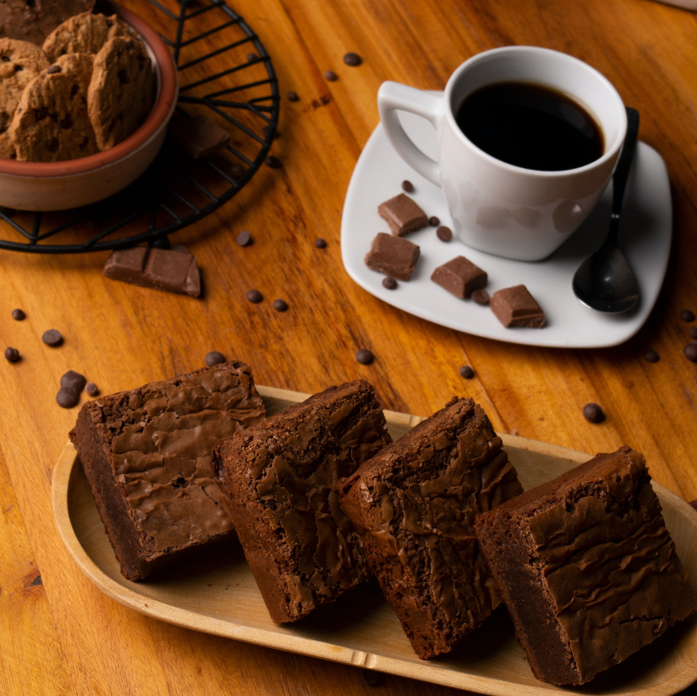

Cherry on Top
Making Life Sweeter One Bite at a Time
Zucchini Brownies
The all-time favorite but with a healthy twist!
150 g zucchini, grated
100 g walnuts, chopped
50 g chocolate (preferably 70% or more)
75 g butter
50 g flour
3 tsp cacao powder
1 tsp baking powder
180 g sugar
2 eggs
1 package vanilla sugar
optional: chocolate chips
Active: 20 mins
Baking: 30 mins
Total: 50 mins
Preheat oven to 150°C
Bake 30-35 mins
Grease and flour a rectangular baking tray or line it with baking paper.
Melt the butter with the chocolate and let it cool.
Beat the eggs with sugar and vanilla sugar for several minutes at highest setting until foamy.
Mix the flour with the cocoa and baking powder and add to egg-sugar-mixture.
Add butter-chocolate, mix, and fold in zucchini and nuts (+ optional chocolate chips).
Pour the dough into the form, smooth it down and bake for 30-35 minutes.
Enjoy!
You can't see or taste the zucchini afterwards, but it makes the brownies super juicy.
The brownies should still be moist when being taken out of the oven.
